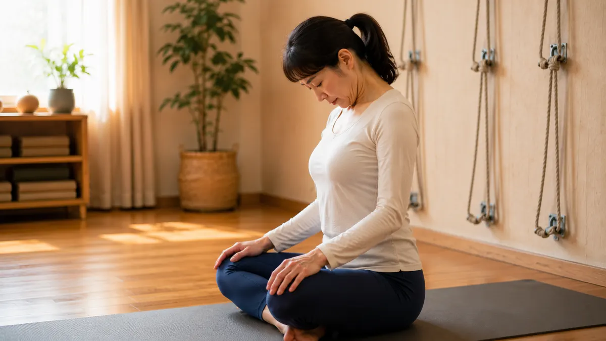

50 歲後練壁繩瑜伽安全嗎？上課前的界線與退階方式
陪家人到教室門口，她望著牆上的繩子問：如果手一下沒抓穩、或者站起來突然暈，老師來得及扶我嗎？這比能不能做到動作重要得多。
50 歲後能否上壁繩課，要看近期身體狀況、轉位能力與老師能提供的調整。繩帶可增加支點，但起身、換方向與握繩仍需要控制。入門可先從雙腳著地或有椅面支撐的小幅度版本開始。近期手術、受傷、反覆暈眩或新出現的不適，先問醫療專業人員再安排課程。
50 歲後上壁繩課，先和老師確認哪些事？
先說明最近是否有跌倒、手術、頭暈，或從椅子站起時需要人協助。問老師會怎麼調整站位、能否全程保留腳底或椅面支撐，以及哪個動作可以改做。想先了解壁繩支點和一般課堂安排可以先看支柱頁；如果困擾是單腳穿衣或走路時會晃，平衡篇專門整理那一類日常情境。
👆 手機版可左右滑動
| 目前情況 | 課前怎麼安排 | 退階或停止的界線 |
|---|---|---|
| 起身需要扶桌，站久容易累 | 和老師討論穩固椅面、牆面與小幅站姿版本。 | 先保留可立即坐回的支點，累了先停。 |
| 轉位常頭暈或最近有跌倒 | 先向醫療專業人員確認適合的活動。 | 上課時突然頭暈，停止並請旁人協助。 |
| 近期手術、受傷或有醫囑限制 | 先向照護團隊確認時機及動作限制，再告知老師。 | 繩帶與陪同無法替代個別評估。 |
什麼情況先暫緩？如何從支撐較多的版本開始？
上課中若突然明顯不適，先停止並告知老師。近期手術、有醫囑限制或有新出現且持續的症狀，先請醫療專業人員確認。能進行一般運動後，再看壁繩能提供哪些練習，哪些期待需要調整；想討論站姿影像和一般練習選擇，可了解現場體態檢測的範圍。它提供動作觀察與討論，無法作為上課安全許可。

本文是一般動作與課程資訊。若練習引發明顯不適，先停止並依情況尋求醫療專業評估。 參考 NCCIH 瑜伽安全說明。
常見問題
年過 50 就應該選壁繩嗎？
年齡只是其中一項考量。近期身體狀況、平常的活動能力及老師能提供的調整同樣重要。
有骨質疏鬆診斷可以直接上課嗎？
先請照護你的專業人員說明適合的活動與限制，再把限制告知老師。
手術後可以用壁繩早一點恢復練習嗎？
復課時機與限制依手術和恢復程度而異，先由照護團隊確認。
覺得快失去平衡時要繼續做嗎？
先停下並告知老師。下次可討論縮小幅度或使用穩固支點。
體態檢測可以確認我能不能上課嗎？
體態檢測用來討論站姿及動作習慣。有症狀或醫囑限制時，活動許可由醫療專業人員判斷。
想把日常最有感的站立或走動時刻記下來，可以先整理生活線索。開始免費體態訊號掃描。